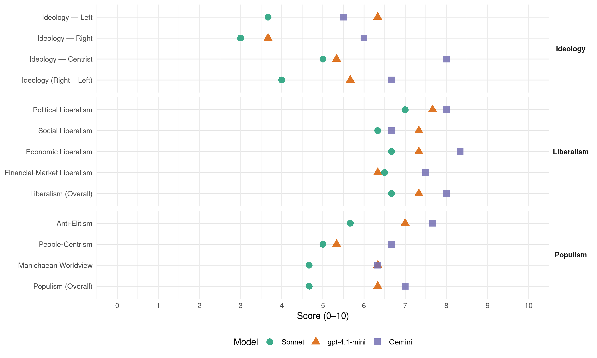

IdV (Italy, 2001)
manifesto_id 32902_200105
Get full text: This site shows derived annotations and short verbatim quotes only. The full manifesto text is © Manifesto Project / WZB — obtain it via manifesto-project.wzb.eu using the manifesto_id above.
Headline scores
| Dimension | Sonnet | gpt-4.1-mini | Gemini |
|---|---|---|---|
| Populism (Overall) | 4.7 | 6.3 | 7.0 |
| Anti-Elitism | 5.7 | 7.0 | 7.7 |
| People-Centrism | 5.0 | 5.3 | 6.7 |
| Manichaean Worldview | 4.7 | 6.3 | 6.3 |
| Ideology (Right − Left) | 4.0 | 5.7 | 6.7 |
| Liberalism (Overall) | 6.7 | 7.3 | 8.0 |
| Political Liberalism | 7.0 | 7.7 | 8.0 |
| Social Liberalism | 6.3 | 7.3 | 6.7 |
| Economic Liberalism | 6.7 | 7.3 | 8.3 |
| Financial-Market Liberalism | 6.5 | 6.3 | 7.5 |
Evidence per dimension
Economic Liberalism
Gemini · score 9.0 · verified · chunk 1
“cultura liberale dell’economia di mercato”
la cultura socialista del lavoro e della giustizia sociale, la cultura liberale dell’economia di mercato, della libertà individuale
Gemini · score 8.0 · verified · chunk 2
“provvedimenti volti a liberalizzare i mercati”
Sono quindi quanto mai necessari, soprattutto in questa area, provvedimenti volti a liberalizzare i mercati.
Gemini · score 8.0 · verified · chunk 3
“autorità per la libera concorrenza nel mercato”
all’Autorità antitrust (autorità per la libera concorrenza nel mercato) tutte le competenze
gpt-4.1-mini · score 8.0 · verified · chunk 1
“Privatizzazioni vere e trasparenti che si misurino con il mercato”
Bisogna procedere sulla strada delle privatizzazioni. Privatizzazioni vere e trasparenti che si misurino con il mercato e la concorrenza.
gpt-4.1-mini · score 7.0 · verified · chunk 2
“Sono quindi quanto mai necessari, soprattutto in questa area, provvedimenti volti a liberalizzare i mercati”
Nel Mezzogiorno si ripropongono, amplificati, i problemi che affliggono l’intera economia italiana e che determinano il cattivo funzionamento del mercato del lavoro e dell’economia reale. Sono quindi quanto mai necessari, soprattutto in questa area, provvedimenti volti a liberalizzare i mercati.
gpt-4.1-mini · score 7.0 · verified · chunk 3
“infrastrutture adeguate, formazione, sicurezza, semplificazione amministrativa”
Infrastrutture adeguate, formazione, sicurezza, semplificazione amministrativa e capacità di attrazione degli investimenti esteri, restano gli elementi fondamentali per non perdere competitività nei confronti delle aziende internazionali tenendo comunque sempre presente le esigenze di salvaguardia ambientale e di sicurezza individuale.
Sonnet · score 7.0 · verified · chunk 1
“Più mercato, meno stato, più società civile”
Per completare la modernizzazione del paese guidata da regole chiare e trasparenti é necessario che lo ‘Stato Imprenditore’ ceda il passo definitivamente allo ‘Stato Regolatore e Arbitro’. Bisogna procedere sulla strada delle privatizzazioni.
Sonnet · score 7.0 · verified · chunk 2
“provvedimenti volti a liberalizzare i mercati”
Sono quindi quanto mai necessari, soprattutto in questa area, provvedimenti volti a liberalizzare i mercati.
Sonnet · score 6.0 · verified · chunk 3
“forte deregulation”
Noi riteniamo: - che sia necessaria una forte deregulation, anche se pensiamo che il mercato non possa costituire
Financial-Market Liberalism
Gemini · score 8.0 · verified · chunk 1
“partite dei mercati finanziari, delle banche”
perché le partite dei mercati finanziari, delle banche, delle assicurazioni, delle finanziarie, delle imprese si svolgano nel rispetto delle regole
Gemini · score 7.0 · verified · chunk 2
“tutela dei risparmiatori e alla loro partecipazione”
Le privatizzazioni e la nuova disciplina sulle società quotate in borsa non hanno prodotto finora risultati positivi riguardo alla efficienza e trasparenza delle attività gestionali (…), alla tutela dei risparmiatori e alla loro partecipazione alla vita societaria
gpt-4.1-mini · score 7.0 · verified · chunk 1
“risparmio sia premiato e i risparmiatori tutelati”
Lo Stato Arbitro e Regolatore ha una funzione determinante perché le partite dei mercati finanziari, delle banche, delle assicurazioni, delle finanziarie, delle imprese si svolgano nel rispetto delle regole e non siano truccate. Lo stesso dicasi per fare in modo che il risparmio sia premiato e i risparmiatori tutelati
gpt-4.1-mini · score 6.0 · verified · chunk 2
“Tutelare il risparmio di fronte alle banche, alle assicurazioni, alla borsa. - Imporre poche regole e tanta trasparenza”
- Liberare il mercato dallo stato imprenditore e dai cartelli privati. - Tutelare il risparmio di fronte alle banche, alle assicurazioni, alla borsa. - Imporre poche regole e tanta trasparenza. - Rafforzare le autorità di controllo e punire quando si derubano i cittadini.
gpt-4.1-mini · score 6.0 · verified · chunk 3
“Consob e gli operatori dell’informazione”
Consob e gli operatori dell’informazione. La Carta di Treviso, codice di autoregolamentazione dei giornalisti per la difesa dei minori, va allegata alla legge sulla professione dei giornalisti, nata nel 1963 e che deve essere riformata per adeguarla alle nuove esigenze della realtà.
Sonnet · score 7.0 · verified · chunk 1
“i risparmiatori tutelati e che inoltre i piccoli”
Lo Stato Arbitro e Regolatore ha una funzione determinante perché le partite dei mercati finanziari, delle banche, delle assicurazioni, delle finanziarie, delle imprese si svolgano nel rispetto delle regole e non siano truccate. Lo stesso dicasi per fare in modo che il risparmio sia premiato e i risparmiatori tutelati e che inoltre i piccoli e medi azionisti abbiano la possibilità di essere rappresentati
Sonnet · score 6.0 · mixed · chunk 2
“Liberare il mercato dallo stato imprenditore”
Cambiare le competenze della Banca d’Italia. - Liberare il mercato dallo stato imprenditore e dai cartelli privati. - Tutelare il risparmio di fronte alle banche, alle assicurazioni, alla borsa.
Sonnet · score 6.0 · verified · chunk 3
“vigilanza della banca d’Italia”
rimozione del segreto riguardante la vigilanza della banca d’Italia.
Political Liberalism
Gemini · score 9.0 · verified · chunk 1
“separazione e distinzione del potere esecutivo”
Separazione e distinzione del potere esecutivo e del potere legislativo dell’Unione per garantire chiarezza
Gemini · score 7.0 · verified · chunk 2
“tutela dei diritti di proprietà”
Una seria politica a favore delle regioni meridionali dovrebbe avere come capisaldi la tutela dei diritti di proprietà, la lotta alla criminalità ed un migliore controllo delle azioni della burocrazia.
Gemini · score 8.0 · verified · chunk 3
“la legge è uguale per tutti”
dare concretezza all’articolo 3 della Costituzione (la legge è uguale per tutti e tutti i cittadini)
gpt-4.1-mini · score 9.0 · verified · chunk 1
“democrazia bipolare e maggioritaria”
Riteniamo che un preciso Statuto dell’opposizione sia coerente con la democrazia bipolare e maggioritaria.
gpt-4.1-mini · score 7.0 · verified · chunk 2
“effettiva uguaglianza di fronte al Fisco, alle Banche, alle Assicurazioni, ai Poteri forti”
Cittadini - Lavoratori - Azionisti: effettiva uguaglianza di fronte al Fisco, alle Banche, alle Assicurazioni, ai Poteri forti. E’ necessario: - Slegare e liberare lo Stato da tutto ciò che é inutile, superfluo e che imbriglia, ritarda, ostacola, appanna: Enti, leggi, regolamenti, bolli, autorizzazioni, concessioni.
gpt-4.1-mini · score 7.0 · verified · chunk 3
“la legge è uguale per tutti e tutti i cittadini sono uguali di fronte alla legge”
Per invertire la rotta e dare concretezza all’articolo 3 della Costituzione (la legge è uguale per tutti e tutti i cittadini sono uguali di fronte alla legge) occorrono poche, semplici, ma drastiche riforme:
Sonnet · score 7.0 · verified · chunk 1
“affermazione della democrazia dei cittadini”
esercizio della funzione di controllo dei parlamentari sull’esecutivo; affermazione della democrazia dei cittadini al posto della democrazia dei partiti
Sonnet · score 7.0 · verified · chunk 2
“Agibilità della democrazia”
Capitolo 6 GIUSTIZIA, LEGALITÀ, SICUREZZA Legge e ordine - Uguaglianza dei cittadini di fronte alla legge. - Certezza della pena. - Agibilità della democrazia.
Sonnet · score 7.0 · verified · chunk 3
“i rischi per la democrazia diventano intollerabili”
ha anche la proprietà della televisione, i rischi per la democrazia diventano intollerabili. La televisione, in Italia
Liberalism (Overall)
Gemini · score 9.0 · verified · chunk 1
“cultura liberale dell’economia di mercato”
la cultura socialista del lavoro e della giustizia sociale, la cultura liberale dell’economia di mercato, della libertà individuale
Gemini · score 7.0 · verified · chunk 2
“provvedimenti volti a liberalizzare i mercati”
Sono quindi quanto mai necessari, soprattutto in questa area, provvedimenti volti a liberalizzare i mercati.
Gemini · score 8.0 · verified · chunk 3
“autorità per la libera concorrenza nel mercato”
all’Autorità antitrust (autorità per la libera concorrenza nel mercato) tutte le competenze
gpt-4.1-mini · score 8.0 · verified · chunk 1
“Privatizzazioni vere e trasparenti che si misurino con il mercato”
Bisogna procedere sulla strada delle privatizzazioni. Privatizzazioni vere e trasparenti che si misurino con il mercato e la concorrenza.
gpt-4.1-mini · score 7.0 · verified · chunk 2
“Sono quindi quanto mai necessari, soprattutto in questa area, provvedimenti volti a liberalizzare i mercati”
Nel Mezzogiorno si ripropongono, amplificati, i problemi che affliggono l’intera economia italiana e che determinano il cattivo funzionamento del mercato del lavoro e dell’economia reale. Sono quindi quanto mai necessari, soprattutto in questa area, provvedimenti volti a liberalizzare i mercati.
gpt-4.1-mini · score 7.0 · verified · chunk 3
“la legge è uguale per tutti e tutti i cittadini sono uguali di fronte alla legge”
Per invertire la rotta e dare concretezza all’articolo 3 della Costituzione (la legge è uguale per tutti e tutti i cittadini sono uguali di fronte alla legge) occorrono poche, semplici, ma drastiche riforme:
Sonnet · score 7.0 · verified · chunk 1
“cultura liberale dell’economia di mercato”
la cultura liberale dell’economia di mercato, della libertà individuale e del buon governo, attraversate dalle grandi tematiche dei diritti civili, della questione morale
Sonnet · score 7.0 · verified · chunk 2
“provvedimenti volti a liberalizzare i mercati”
Sono quindi quanto mai necessari, soprattutto in questa area, provvedimenti volti a liberalizzare i mercati.
Sonnet · score 6.0 · verified · chunk 3
“i rischi per la democrazia diventano intollerabili”
ha anche la proprietà della televisione, i rischi per la democrazia diventano intollerabili. La televisione, in Italia
Anti-Elitism
Gemini · score 8.0 · verified · chunk 1
“fatto della politica una pura gestione del potere”
hanno visto sfumare le differenze tra Destra e Sinistra perché entrambi gli schieramenti hanno fatto della politica una pura gestione del potere.
Gemini · score 7.0 · verified · chunk 2
“alimentato dalla nostra classe politica ed imprenditoriale”
questo “fenomeno”, sconosciuto nel resto d’Europa, e che nessuno più in Italia considera reato, è stato alimentato dalla nostra classe politica ed imprenditoriale contribuendo anche con “l’effetto annuncio”
Gemini · score 8.0 · verified · chunk 3
“oligarchie che cercano accordi con i potentati”
fatta di oligarchie che cercano accordi con i potentati economici e con i poteri forti.
gpt-4.1-mini · score 8.0 · verified · chunk 1
“la casa delle impunità del centro destra”
Da soli per battere la casa delle impunità del centro destra e per sconfiggere l’opportunismo del centro sinistra.
gpt-4.1-mini · score 6.0 · verified · chunk 2
“Slegare e liberare lo Stato da tutto ciò che é inutile, superfluo e che imbriglia”
Cittadini - Lavoratori - Azionisti: effettiva uguaglianza di fronte al Fisco, alle Banche, alle Assicurazioni, ai Poteri forti. E’ necessario: - Slegare e liberare lo Stato da tutto ciò che é inutile, superfluo e che imbriglia, ritarda, ostacola, appanna: Enti, leggi, regolamenti, bolli, autorizzazioni, concessioni. - Cambiare le competenze della Banca d’Italia.
gpt-4.1-mini · score 7.0 · verified · chunk 3
“Il processo attuale favorisce i ricchi e i potenti”
Il processo attuale favorisce i ricchi e i potenti, coloro cioè che si possono permettere di resistere anni e anni in giudizio utilizzando cavilli procedurali (spesso fatti ad hoc, per permettere ad imputati eccellenti di sfuggire alla giustizia). Per invertire la rotta e dare concretezza all’articolo 3 della Costituzione (la legge è uguale per tutti e tutti i cittadini sono uguali di fronte alla legge) occorrono poche, semplici, ma drastiche riforme:
Sonnet · score 7.0 · verified · chunk 1
“il polo delle impunità di Berlusconi”
Ci presentiamo da soli perché i poli sono tre: 1) il polo delle impunità di Berlusconi. 2) il polo della legalità di Di Pietro. 3) il polo della palude e dell’opportunismo del cento sinistra.
Sonnet · score 4.0 · verified · chunk 2
“Cittadini - Lavoratori - Azionisti: effettiva uguaglianza”
Capitolo 5 FISCO, BANCHE, ASSICURAZIONI, MERCATI FINANZIARI. Cittadini - Lavoratori - Azionisti: effettiva uguaglianza di fronte al Fisco, alle Banche, alle Assicurazioni, ai Poteri forti.
Sonnet · score 6.0 · verified · chunk 3
“élites dominanti”
solo ad aumentare la ricchezza e i privilegi delle élites dominanti o, come noi vorremmo, potrà essere usato
Ideology — Centrist
Gemini · score 8.0 · verified · chunk 1
“questione morale hanno visto sfumare le differenze”
A tutti coloro che di fronte alla questione morale hanno visto sfumare le differenze tra Destra e Sinistra
gpt-4.1-mini · score 6.0 · verified · chunk 1
“Mettere il cittadino al primo posto”
Noi assumiamo l’impegno solenne di: - Mettere il cittadino al primo posto. - Dare voce a chi non ne ha.
gpt-4.1-mini · score 5.0 · verified · chunk 2
“Patto Governo-Confindustria-Sindacati che affronti specificamente la questione del lavoro nero”
Per queste ragioni la lotta al sommerso deve diventare la priorità delle priorità. La competitività di un paese dipende anche dal suo grado di civiltà e di legalità. Proponiamo un Patto Governo-Confindustria-Sindacati che affronti specificamente la questione del lavoro nero.
gpt-4.1-mini · score 5.0 · verified · chunk 3
“la legge è uguale per tutti e tutti i cittadini sono uguali di fronte alla legge”
Per invertire la rotta e dare concretezza all’articolo 3 della Costituzione (la legge è uguale per tutti e tutti i cittadini sono uguali di fronte alla legge) occorrono poche, semplici, ma drastiche riforme:
Sonnet · score 6.0 · verified · chunk 1
“A tutti coloro che di fronte alla questione morale”
A tutti coloro che di fronte alla questione morale hanno visto sfumare le differenze tra Destra e Sinistra perché entrambi gli schieramenti hanno fatto della politica una pura gestione del potere.
Sonnet · score 4.0 · verified · chunk 2
“Uguaglianza dei cittadini di fronte alla legge”
Capitolo 6 GIUSTIZIA, LEGALITÀ, SICUREZZA Legge e ordine - Uguaglianza dei cittadini di fronte alla legge. - Certezza della pena. - Agibilità della democrazia.
Sonnet · score 5.0 · verified · chunk 3
“La partitocrazia e le lobby minano”
LA DEMOCRAZIA DEI CITTADINI INVECE DELLA PARTITOCRAZIA. La partitocrazia e le lobby minano le basi della democrazia.
Ideology — Left
Gemini · score 5.0 · verified · chunk 2
“Sfruttamento vero del lavoratore”
Il lavoro sommerso é: - Sfruttamento vero del lavoratore; - Evasione fiscale e contributiva; - Concorrenza sleale per le imprese emerse
Gemini · score 6.0 · verified · chunk 3
“oligopolio Mediaset – RAI”
C. Smantellare il duopolio Mediaset – RAI. Il sistema televisivo italiano è ormai caratterizzato
gpt-4.1-mini · score 7.0 · verified · chunk 1
“legalità, solidarietà, giustizia, eguaglianza”
valori della vita, legalità, solidarietà, giustizia, eguaglianza, responsabilità, sussidiarietà, autogoverno diventino il lievito della politica
gpt-4.1-mini · score 6.0 · verified · chunk 2
“politica fiscale alla riforma dello Stato e dell’Amministrazione e definire i fabbisogni”
1) Collegare la politica fiscale alla riforma dello Stato e dell’Amministrazione e definire i fabbisogni delle entrate e delle spese per la fase transitoria (3 anni) e per la fase a regime dopo aver praticato un forte dimagramento dello Stato.
gpt-4.1-mini · score 6.0 · verified · chunk 3
“la lotta al sommerso, sicurezza sul lavoro”
Naturalmente sia le morti bianche che gli interventi per migliorare la sicurezza sul lavoro sono strettamente collegati alle riforme per contenere il lavoro nero. Pertanto le due questioni dovrebbero essere affrontate contestualmente nell’ambito di una strategia generale che si compone di tre gambe: lavoro legale, lotta al sommerso, sicurezza sul lavoro.
Sonnet · score 4.0 · verified · chunk 1
“cultura socialista del lavoro e della giustizia sociale”
La nostra Carta dei Valori ha nella sua matrice le grandi culture riformiste del Novecento: la cultura cattolica della solidarietà familiare e sociale, la cultura socialista del lavoro e della giustizia sociale, la cultura liberale dell’economia di mercato
Sonnet · score 3.0 · verified · chunk 2
“tutela dei risparmiatori e alla loro partecipazione”
Le privatizzazioni e la nuova disciplina sulle società quotate in borsa non hanno prodotto finora risultati positivi riguardo alla efficienza e trasparenza delle attività gestionali… alla tutela dei risparmiatori e alla loro partecipazione alla vita societaria
Sonnet · score 4.0 · verified · chunk 3
“poche multinazionali”
i cui brevetti e le cui tecniche autodistruttive (terminator) sono in mano a poche multinazionali, non esclude possibili rischi
Ideology (Right − Left)
Gemini · score 8.0 · verified · chunk 1
“questione morale hanno visto sfumare le differenze”
A tutti coloro che di fronte alla questione morale hanno visto sfumare le differenze tra Destra e Sinistra
Gemini · score 6.0 · verified · chunk 2
“Sfruttamento vero del lavoratore”
Il lavoro sommerso é: - Sfruttamento vero del lavoratore; - Evasione fiscale e contributiva; - Concorrenza sleale per le imprese emerse
Gemini · score 6.0 · verified · chunk 3
“oligarchie che cercano accordi con i potentati”
fatta di oligarchie che cercano accordi con i potentati economici e con i poteri forti.
gpt-4.1-mini · score 7.0 · verified · chunk 1
“valori della vita, legalità, solidarietà, giustizia, eguaglianza”
batterci, in ogni caso, eletti o no, con tutte le nostre forze e sul nostro onore, perché i valori della vita, legalità, solidarietà, giustizia, eguaglianza, responsabilità, sussidiarietà, autogoverno diventino il lievito della politica
gpt-4.1-mini · score 5.0 · verified · chunk 2
“Slegare e liberare lo Stato da tutto ciò che é inutile, superfluo e che imbriglia”
Cittadini - Lavoratori - Azionisti: effettiva uguaglianza di fronte al Fisco, alle Banche, alle Assicurazioni, ai Poteri forti. E’ necessario: - Slegare e liberare lo Stato da tutto ciò che é inutile, superfluo e che imbriglia, ritarda, ostacola, appanna: Enti, leggi, regolamenti, bolli, autorizzazioni, concessioni. - Cambiare le competenze della Banca d’Italia.
gpt-4.1-mini · score 5.0 · verified · chunk 3
“la legge è uguale per tutti e tutti i cittadini sono uguali di fronte alla legge”
Per invertire la rotta e dare concretezza all’articolo 3 della Costituzione (la legge è uguale per tutti e tutti i cittadini sono uguali di fronte alla legge) occorrono poche, semplici, ma drastiche riforme:
Sonnet · score 5.0 · verified · chunk 1
“un movimento di valori capace di risolvere”
Il nostro é un movimento di valori capace di risolvere i problemi concreti. La nostra Carta dei Valori ha nella sua matrice le grandi culture riformiste del Novecento
Sonnet · score 3.0 · verified · chunk 2
“effettiva uguaglianza di fronte al Fisco”
Cittadini - Lavoratori - Azionisti: effettiva uguaglianza di fronte al Fisco, alle Banche, alle Assicurazioni, ai Poteri forti.
Sonnet · score 4.0 · verified · chunk 3
“La partitocrazia e le lobby minano”
LA DEMOCRAZIA DEI CITTADINI INVECE DELLA PARTITOCRAZIA. La partitocrazia e le lobby minano le basi della democrazia.
Ideology — Right
Gemini · score 6.0 · verified · chunk 2
“istituzione del reato di clandestinità”
istituzione del reato di clandestinità per chi non sia in grado di fornire e provare le proprie reali generalità
gpt-4.1-mini · score 3.0 · verified · chunk 1
“difesa delle culture nazionali e locali”
Difesa delle culture nazionali e locali: 1) Fissazione di tetti massimi sulla quantità di audiovisivi di importazione che possono essere trasmessi in televisione o distribuiti nelle sale cinematografiche
gpt-4.1-mini · score 4.0 · verified · chunk 2
“Approvare la riforma federale dello Stato e riconoscere, con legge ordinaria, alle Regioni del Nord la condizione di Regioni a Statuto speciale”
C. Questione settentrionale: quando si produce ricchezza e si pagano le tasse ottenere il ritorno di servizi efficienti è un diritto. - Approvare la riforma federale dello Stato e riconoscere, con legge ordinaria, alle Regioni del Nord la condizione di Regioni a Statuto speciale. - Varare un piano di legislatura di investimenti per infrastrutture e servizi.
gpt-4.1-mini · score 4.0 · verified · chunk 3
“la nuova”razza padana” che si impone nella New economy”
E’ del tutto evidente che fino alla realizzazione di un sistema di telecomunicazioni fondato sull’uguaglianza e sulla pari dignità degli operatori, operazioni come la concentrazione SEAT-TMC non favoriscono affatto il pluralismo, ma creano nuovi e più potenti centri di potere a danno dei consumatori, contribuendo al degrado del servizio in contrasto con lo spirito delle disposizioni comunitarie. E’ inammissibile che un unico soggetto risulti titolare della rete fissa di telefonia indispensabile all’esercizio di tutte le comunicazioni ed eserciti anche una posizione di definizione dei contenuti su una concessionaria radiotelevisiva e insieme controlli gli accessi ad Internet (definendo le tariffe del servizio telefonico) e per di più disponga di un patrimonio di dati personali degli utenti e delle imprese indispensabili per il commercio. … la nuova “razza padana” che si impone nella New economy.
Sonnet · score 2.0 · mixed · chunk 1
“difesa dello stato sociale senza vincoli burocratici”
lo sviluppo sostenibile nell’ambito dell’economia di mercato vecchia e nuova, la difesa dello stato sociale senza vincoli burocratici, il potenziamento del sapere
Sonnet · score 3.0 · verified · chunk 2
“istituzione del reato di clandestinità”
istituzione del reato di clandestinità per chi non sia in grado di fornire e provare le proprie reali generalità; per chi si trovi sul territorio dello Stato senza permesso di soggiorno
Manichaean Worldview
Gemini · score 8.0 · verified · chunk 1
“casa delle impunità del centro destra”
Da soli per battere la casa delle impunità del centro destra e per sconfiggere l’opportunismo del centro sinistra.
Gemini · score 5.0 · verified · chunk 2
“quando si derubano i cittadini”
Rafforzare le autorità di controllo e punire quando si derubano i cittadini.
Gemini · score 6.0 · verified · chunk 3
“favorisce i colpevoli, che non si difendono”
la sua durata infinita favorisce i colpevoli, che non si difendono “nel” processo, ma “dal processo”
gpt-4.1-mini · score 8.0 · verified · chunk 1
“valori della vita, legalità, solidarietà, giustizia, eguaglianza”
batterci, in ogni caso, eletti o no, con tutte le nostre forze e sul nostro onore, perché i valori della vita, legalità, solidarietà, giustizia, eguaglianza, responsabilità, sussidiarietà, autogoverno diventino il lievito della politica
gpt-4.1-mini · score 5.0 · verified · chunk 2
“La lotta al sommerso deve diventare la priorità delle priorità”
Il sommerso sfrutta i lavoratori, froda lo stato, inquina la concorrenza, danneggia le aziende pulite. Il sommerso rappresenta oltre il 20 per cento di tutta l’economia nazionale. Nel Mezzogiorno supera il 50-60 per cento. Con un tasso di legalità uguale a quello degli altri paesi europei, verrebbero alla luce almeno 250 mila miliardi di ricchezza nazionale ed entrate fiscali e contributive per almeno 100 mila miliardi. La lotta al sommerso deve diventare la priorità delle priorità.
gpt-4.1-mini · score 6.0 · verified · chunk 3
“la partitocrazia e le lobby minano le basi della democrazia”
La partitocrazia e le lobby minano le basi della democrazia. Operazione trasparenza: Le nostre istituzioni hanno bisogno di una grande operazione di trasparenza sia al loro interno che nei rapporti tra di loro e nei rapporti con i cittadini.
Sonnet · score 6.0 · verified · chunk 1
“polo della legalità di Di Pietro”
i poli sono tre: 1) il polo delle impunità di Berlusconi. 2) il polo della legalità di Di Pietro. 3) il polo della palude e dell’opportunismo
Sonnet · score 3.0 · verified · chunk 2
“la mafia fa pagare i propri voti”
riscrivere la normativa sul voto di scambio, oggi punibile soltanto quando si dimostri la compravendita di voti per denaro, mentre sappiamo bene che la mafia fa pagare i propri voti in modi ben diversi (affari, appalti, impunità).
Sonnet · score 5.0 · verified · chunk 3
“Il processo attuale favorisce i ricchi e i potenti”
Il processo attuale favorisce i ricchi e i potenti, coloro cioè che si possono permettere di resistere anni
People-Centrism
Gemini · score 7.0 · verified · chunk 1
“la sovranità spetta ai cittadini”
trattati con rispetto e considerazione dato che la sovranità spetta ai cittadini, e cioè a tutti noi.
Gemini · score 6.0 · verified · chunk 2
“effettiva uguaglianza di fronte al Fisco”
Capitolo 5 FISCO, BANCHE, ASSICURAZIONI, MERCATI FINANZIARI. Cittadini - Lavoratori - Azionisti: effettiva uguaglianza di fronte al Fisco, alle Banche, alle Assicurazioni, ai Poteri forti.
Gemini · score 7.0 · verified · chunk 3
“Una giustizia dalla parte dei cittadini”
D. Una giustizia dalla parte dei cittadini. Nel Libro Verde sull’accesso alla Giustizia
gpt-4.1-mini · score 7.0 · verified · chunk 1
“Mettere il cittadino al primo posto”
Noi assumiamo l’impegno solenne di: - Mettere il cittadino al primo posto. - Dare voce a chi non ne ha.
gpt-4.1-mini · score 4.0 · verified · chunk 2
“Ai ragazzi volenterosi del Sud che, per educazione e cultura, non vogliono diventare né sommersi né criminali”
Per queste ragioni la lotta al sommerso deve diventare la priorità delle priorità. La competitività di un paese dipende anche dal suo grado di civiltà e di legalità. “Ai ragazzi volenterosi del Sud che, per educazione e cultura, non vogliono diventare né sommersi né criminali ci vogliamo pensare o no?” (intervista del Presidente della CONFINDUSTRIA al Corriere- 6 Agosto 2000).
gpt-4.1-mini · score 5.0 · verified · chunk 3
“la legge è uguale per tutti e tutti i cittadini sono uguali di fronte alla legge”
Per invertire la rotta e dare concretezza all’articolo 3 della Costituzione (la legge è uguale per tutti e tutti i cittadini sono uguali di fronte alla legge) occorrono poche, semplici, ma drastiche riforme:
Sonnet · score 7.0 · verified · chunk 1
“Mettere il cittadino al primo posto”
Noi assumiamo l’impegno solenne di: - Mettere il cittadino al primo posto. - Dare voce a chi non ne ha.
Sonnet · score 3.0 · verified · chunk 2
“I cittadini vogliono sapere”
A. Fisco In uno Stato Arbitro e Regolatore si spende di meno, si pagano meno tasse, diminuiscono gli evasori. I cittadini vogliono sapere: Quante tasse devono pagare, come devono pagarle e, soprattutto, perché.
Sonnet · score 5.0 · verified · chunk 3
“Una giustizia dalla parte dei cittadini”
D. Una giustizia dalla parte dei cittadini. Nel Libro Verde sull’accesso alla Giustizia dei consumatori
Populism (Overall)
Gemini · score 8.0 · verified · chunk 1
“separazione dell’etica dalla politica”
la cancellazione della questione morale e la separazione dell’etica dalla politica; l’approvazione di una politica che abbiamo combattuto
Gemini · score 6.0 · verified · chunk 2
“effettiva uguaglianza di fronte al Fisco”
Capitolo 5 FISCO, BANCHE, ASSICURAZIONI, MERCATI FINANZIARI. Cittadini - Lavoratori - Azionisti: effettiva uguaglianza di fronte al Fisco, alle Banche, alle Assicurazioni, ai Poteri forti.
Gemini · score 7.0 · verified · chunk 3
“oligarchie che cercano accordi con i potentati”
fatta di oligarchie che cercano accordi con i potentati economici e con i poteri forti.
gpt-4.1-mini · score 8.0 · verified · chunk 1
“la casa delle impunità del centro destra”
Da soli per battere la casa delle impunità del centro destra e per sconfiggere l’opportunismo del centro sinistra.
gpt-4.1-mini · score 5.0 · verified · chunk 2
“Slegare e liberare lo Stato da tutto ciò che é inutile, superfluo e che imbriglia”
Cittadini - Lavoratori - Azionisti: effettiva uguaglianza di fronte al Fisco, alle Banche, alle Assicurazioni, ai Poteri forti. E’ necessario: - Slegare e liberare lo Stato da tutto ciò che é inutile, superfluo e che imbriglia, ritarda, ostacola, appanna: Enti, leggi, regolamenti, bolli, autorizzazioni, concessioni. - Cambiare le competenze della Banca d’Italia.
gpt-4.1-mini · score 6.0 · verified · chunk 3
“Il processo attuale favorisce i ricchi e i potenti”
Il processo attuale favorisce i ricchi e i potenti, coloro cioè che si possono permettere di resistere anni e anni in giudizio utilizzando cavilli procedurali (spesso fatti ad hoc, per permettere ad imputati eccellenti di sfuggire alla giustizia). Per invertire la rotta e dare concretezza all’articolo 3 della Costituzione (la legge è uguale per tutti e tutti i cittadini sono uguali di fronte alla legge) occorrono poche, semplici, ma drastiche riforme:
Sonnet · score 6.0 · verified · chunk 1
“Dare voce a chi non ne ha”
Noi assumiamo l’impegno solenne di: - Mettere il cittadino al primo posto. - Dare voce a chi non ne ha. - Restituire la dignità a coloro a cui è stata tolta
Sonnet · score 3.0 · verified · chunk 2
“effettiva uguaglianza di fronte al Fisco”
Cittadini - Lavoratori - Azionisti: effettiva uguaglianza di fronte al Fisco, alle Banche, alle Assicurazioni, ai Poteri forti.
Sonnet · score 5.0 · verified · chunk 3
“élites dominanti”
solo ad aumentare la ricchezza e i privilegi delle élites dominanti o, come noi vorremmo, potrà essere usato
Social Liberalism